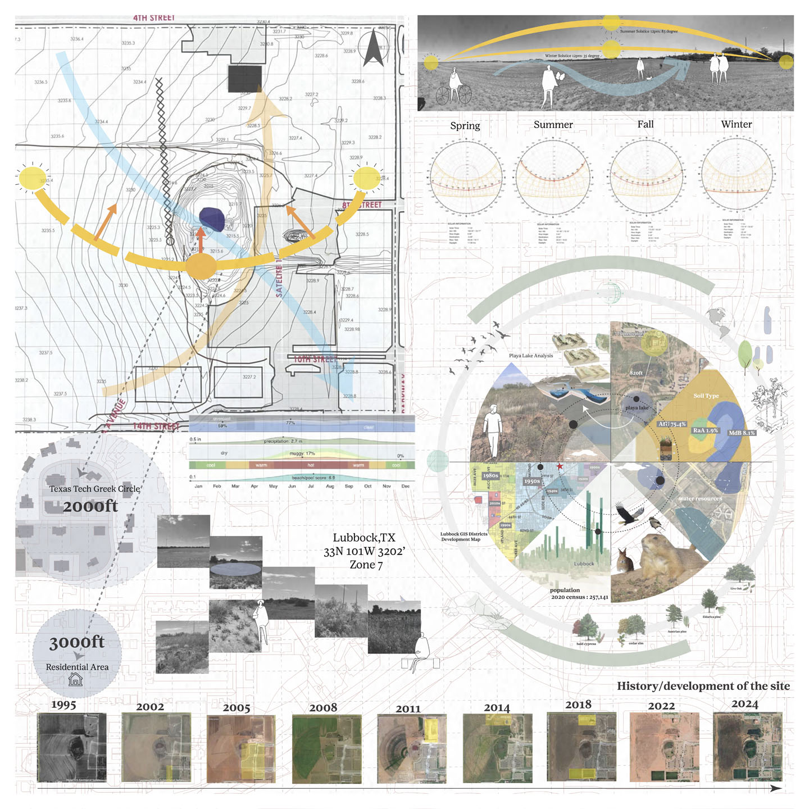
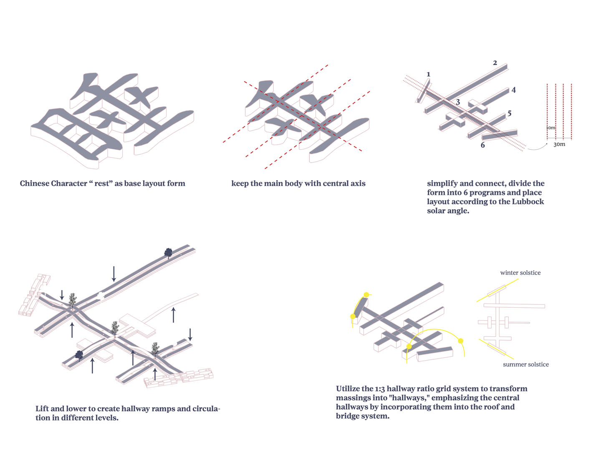
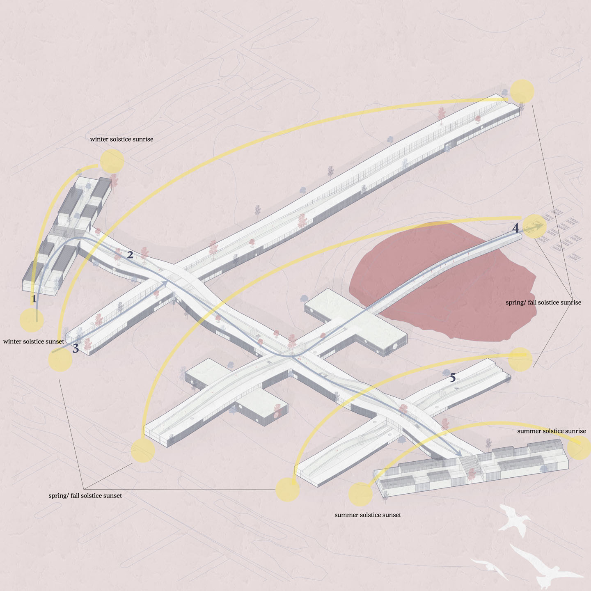
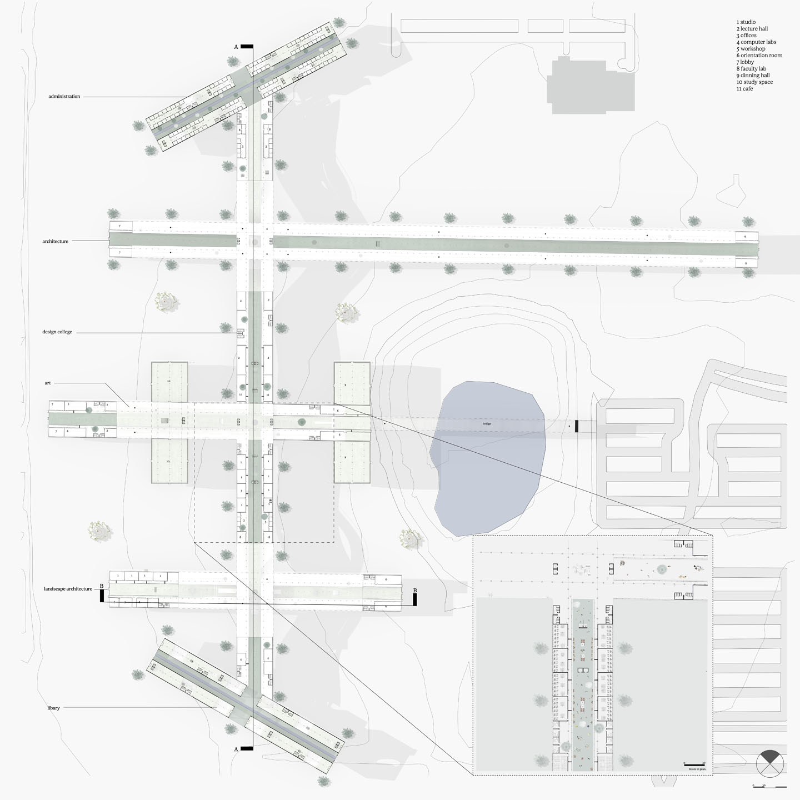
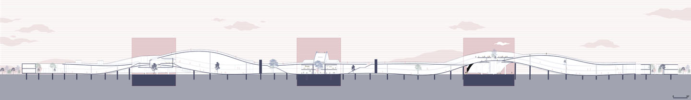
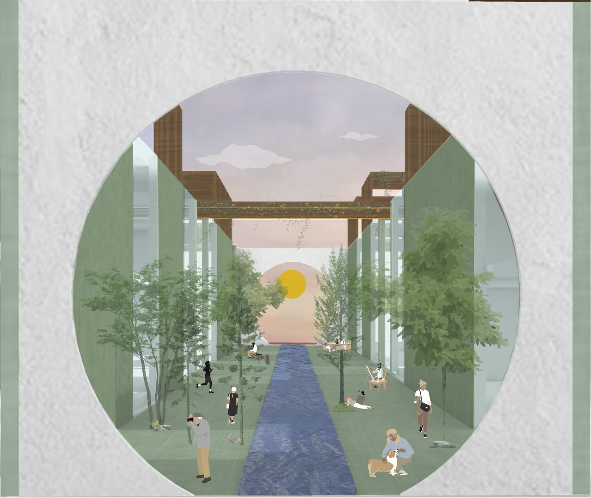
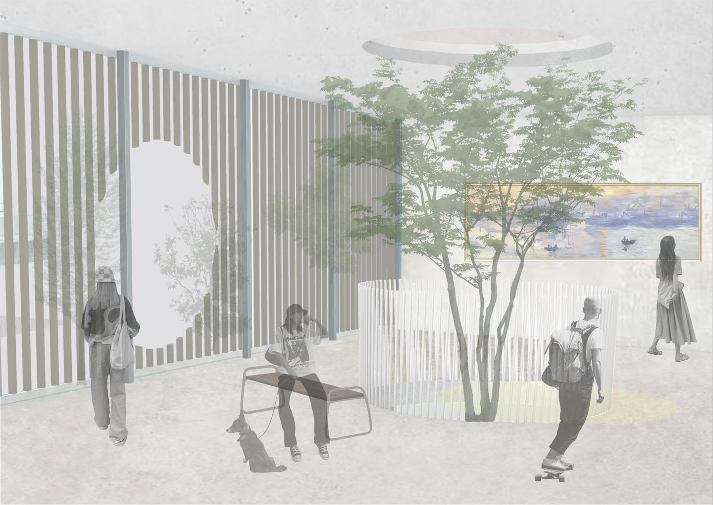
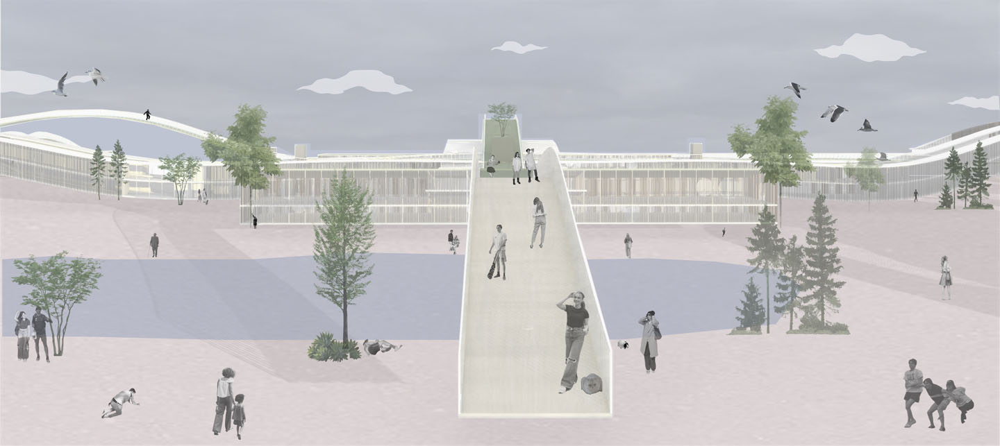

Type:Education Institution in Texas Tech Campus,Lubbock,TX.
The new TTU Academic Village, located in the underdeveloped school districts of Texas Tech University, is designed to serve as a modern ed- ucational environment. This village aims to foster learning and community en- gagement by providing state-of-the-art facilities and resources. Its focus is on enhancing the educational experience for students and faculty, while address- ing the unique needs of the surrounding area to support academic growth and development.

Academic Village Vision Board
Site Analysis
Form Diagram
Perspective View
First Floor Plan
Section
Infinite Corridor Sunset View

Green Walkable Roop View

Section Perspective
Interior View
Elevation View